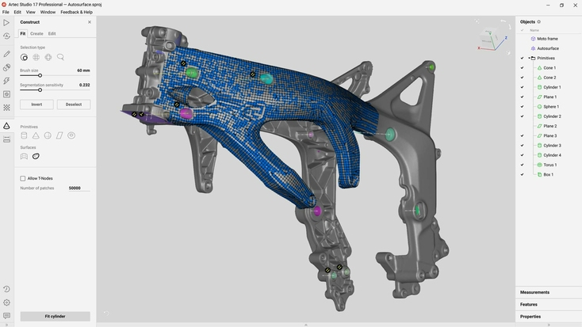
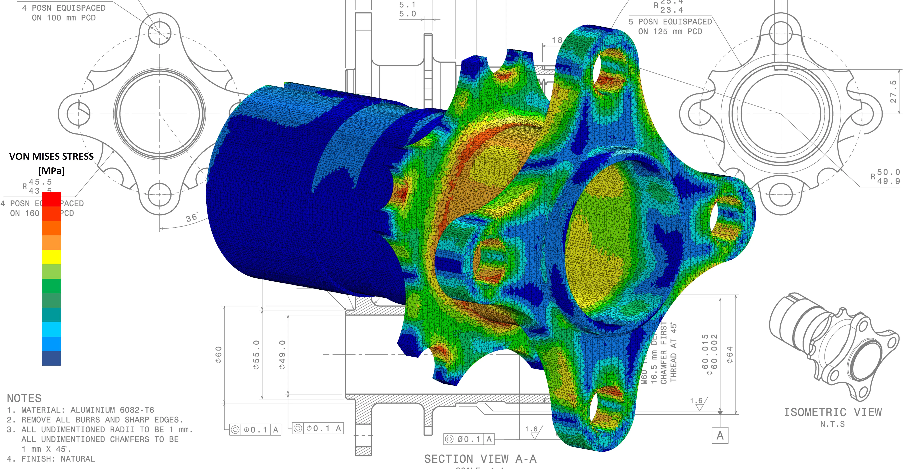

Modelado Técnico
Creación de planos de ingeniería y archivos STL optimizados para manufactura aditiva y sustractiva
Transformo problemas industriales complejos en soluciones digitales precisas. Especialista en CAD, modelado orgánico y optimización topológica para manufactura avanzada.
Soluciones integrales respaldadas por tecnología de punta.
Creación de planos de ingeniería y archivos STL optimizados para manufactura aditiva y sustractiva

Digitalización mediante escaneo 3D de alta precisión para reconstruir o mejorar piezas físicas existentes.

Simulación virtual de estrés, fluidos y resistencia de materiales para validar diseños antes de producción.

Servicio técnico, diagnóstico y calibración avanzada para equipos de impresión 3D industriales.
Proveer soluciones de ingeniería digital de vanguardia que optimicen los procesos productivos, reduciendo costos y tiempos de iteración para nuestros clientes corporativos.
Consolidarnos como el estudio de consultoría líder en diseño aditivo y modelado 3D de precisión dentro del mercado tecnológico e industrial a nivel global.